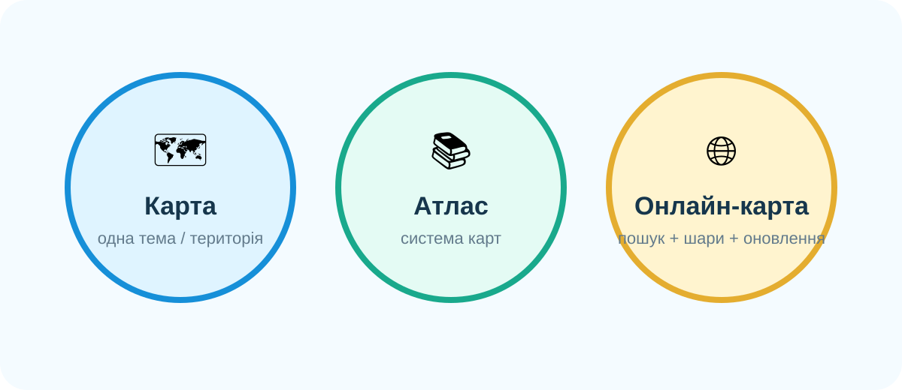

Паперовий атлас
Паперовий атласСистема карт
Зручно бачити світ як упорядкований набір карт: фізичних, політичних, тематичних.
Реальне фото навчальної роботи з атласом.
Не просто «відкрити карту», а вибрати джерело під задачу, перевірити його надійність і пояснити, чому саме цій карті можна довіряти.
Вам треба дослідити місцевість навколо незнайомого міста. Що відкриєте першим: паперову карту, атлас чи онлайн-сервіс?

Локальна схема уроку: три типи картографічних джерел.
Паперовий атласЗручно бачити світ як упорядкований набір карт: фізичних, політичних, тематичних.
Реальне фото навчальної роботи з атласом.
 Цифрова карта
Цифрова картаЗручно наближати територію, шукати об’єкти й швидко переходити між масштабами.
Фото з матеріалу GOV.UK про цифрову географію.
 Комбінований підхід
Комбінований підхідСильне дослідження не залежить від одного сервісу: дані краще звіряти між різними джерелами.
Реальне фото уроку з цифровими й паперовими картами.
| Критерій | Шкільна карта | Атлас | Онлайн-ресурс |
|---|---|---|---|
| Системність | Середня | Висока | Залежить від сервісу |
| Актуальність локальних об’єктів | Низька/середня | Середня | Часто висока |
| Робота без інтернету | Так | Так | Переважно ні |
| Масштабування | Ні | Ні | Так |
| Шари й супутникові дані | Обмежено | Обмежено | Так |
| Перевірка джерела | Автор/видавництво | Автор/видавництво | Треба перевіряти сервіс, шар і дату |
У кожному пункті експедиції оберіть ресурс, який найкраще розв’яже задачу. Після відповіді отримуєте коротке пояснення.
Ваше завдання — не вгадати бренд, а пояснити функцію джерела.
Нижче — реальна інтерактивна карта Запорізького регіону. Масштабуйте її й подивіться, як зі зміною масштабу змінюється кількість деталей.
OpenStreetMap — відкритий картографічний проєкт. Для навчального дослідження важливо перевіряти дату й повноту конкретних об’єктів.
OpenStreetMap — сучасні дороги, будівлі, об’єкти та локальна деталізація.
Google Earth — глобус, 3D-рельєф, супутникові й аерофотознімки.
Copernicus Browser — супутникові дані Sentinel та тематичні візуалізації.
Оберіть сильний критерій перевірки джерела.
Натисніть кнопку, щоб отримати першу ситуацію.
Оберіть одну ділянку на OpenStreetMap і складіть короткий опис місцевості:
Crash Course Geography. Перегляньте перші ~1 хв 45 с: зверніть увагу, що карта — це вибір і модель, а не буквальна копія реальності.
Проблема: учень готує доказовий опис незнайомої території. Чи достатньо одного шкільного атласу?
Опрацювати §11.
Електронна платформа «Всеукраїнська школа онлайн» →
Електронний підручник «Географія, 6 клас» →